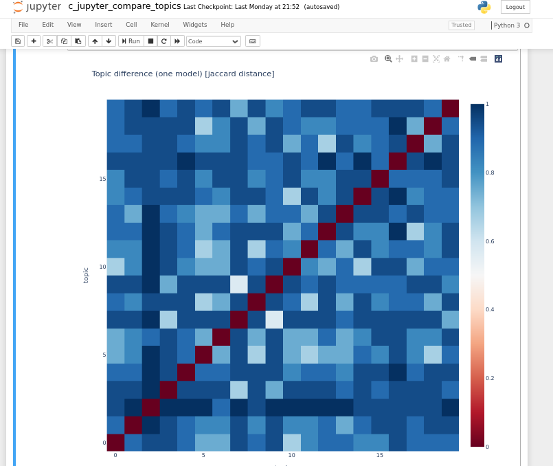
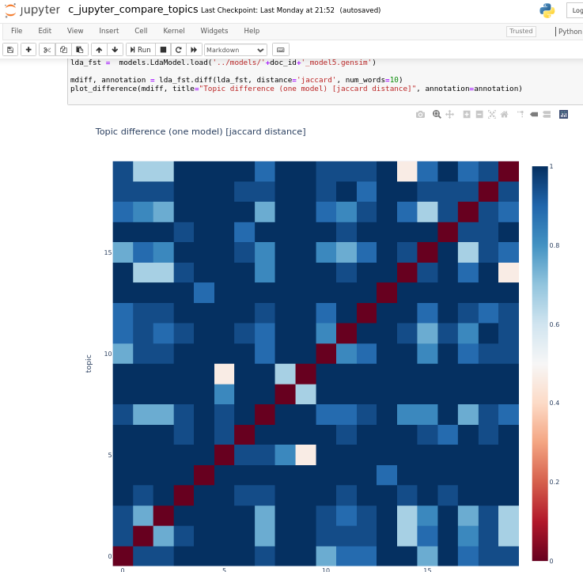
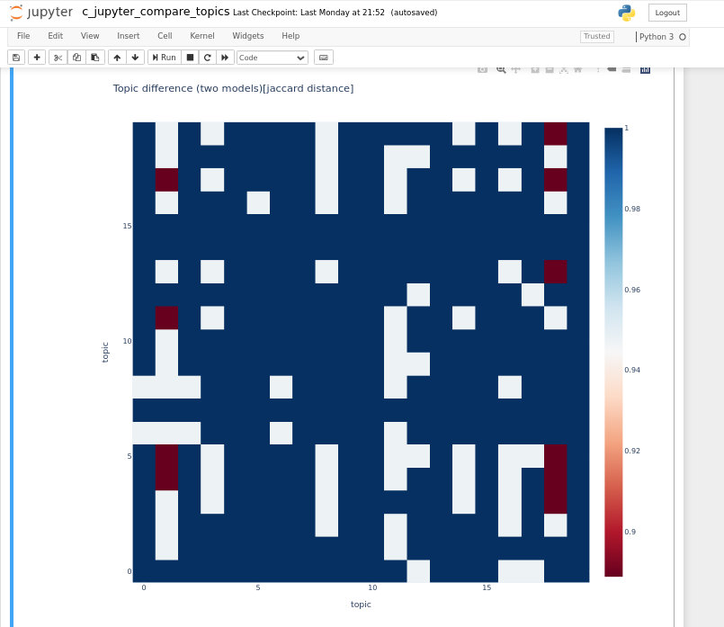

Metrics
The next question to solve would be: How similar are two documents?, ideally this would be a numeric value based on the gensim-topics we can now obtain from each document.
Fortunately, gensim models do provide a neat function to obtain just that; this diff function compares topics between two models and returns a value from 0 to 1 that represents how similar is a topic to another topic.
Since our current code obtains 20 topics from each document we can obtain a 20x20 matrix of values comparing all topics between two models, a jupyter notebook is included in the source code that computes this matrix for any required model and even builds a graphic representation of it.
As a first step, we will obtain a comparison of a model to itself, this will compare all 20 topics among them and will give us an answer to How different are the topics obtained from this document?. This way we can know if a document is mono-thematic or if it covers a wide variety of topics.
For example, in the following graphic we can see that the diagonal is red (indicating a distance of 0; this is, each topic is identical to itself) and for the most part, the cells are light blue without many deep blue cells (which would mean a distance of 1; indicating different topics). So we might conclude that in this document the topics are not much distant from each other

In this other document, we can see a lot of deep blue cells, which we can see as an indication that there are several topics not related at all among them; thus we can say that this document covers a wide variety of “distant” topics

And this last graphic shows the comparison between two models.

| Previous | Home | Next |
|---|---|---|
| Topics from Sefaria | θεόφιλος Journey | Library Graphic Representation |